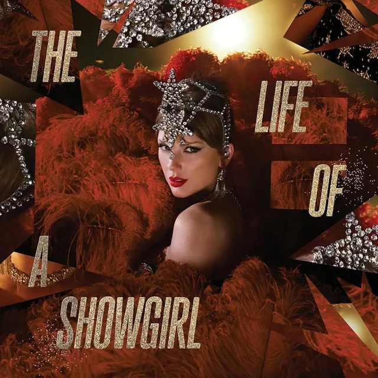
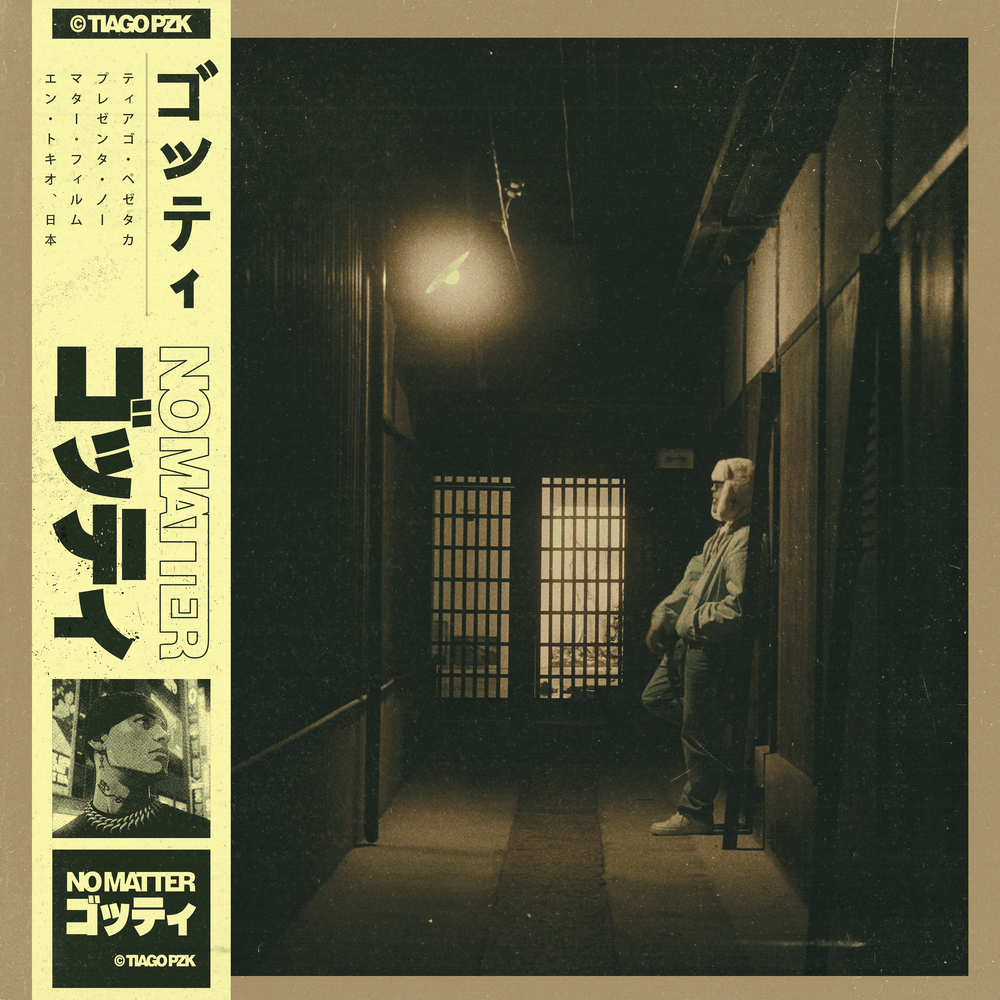
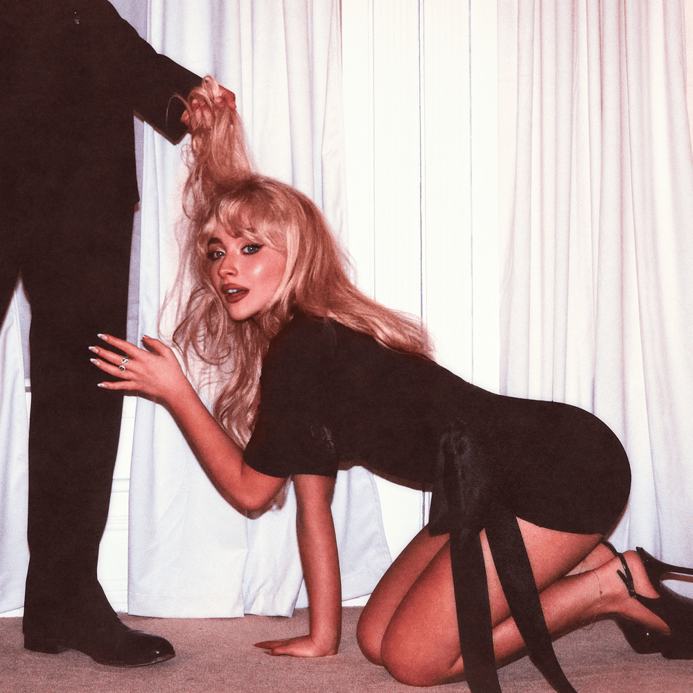
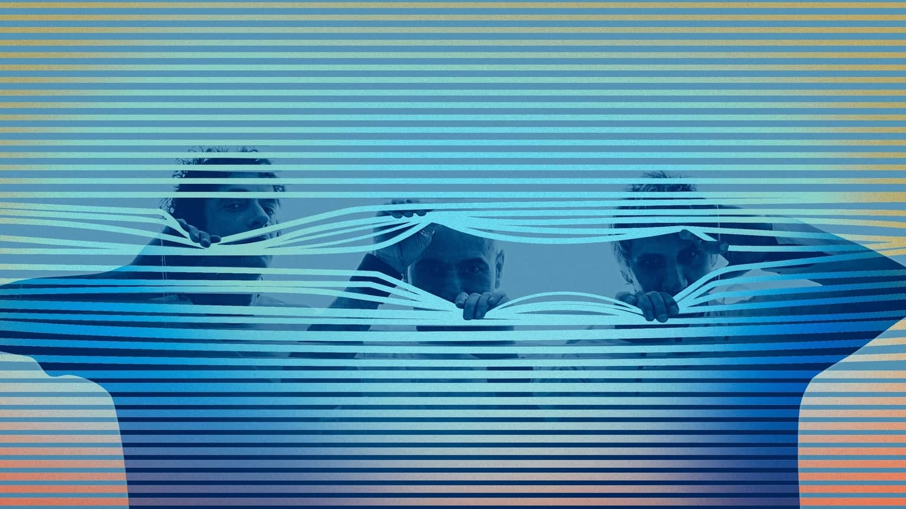

¡CONOCÉ NUESTRO TOP 5 DE LA SEMANA!
1

THE FATE OF OPHELIA
Taylor Swift
2
HASTA QUE ME ENAMORO
María Becerra & TINI
3

NO MATTER
Tiago PZK
4

HOUSE TOUR
Sabrina Carpenter
5

LEMONADE
Louis Tomlinson
ÚLTIMAS NOVEDADES
COMENZÓ FUTTTURA EN BUENOS AIRES Y SE ANUNCIAN FECHAS EN SUDAMÉRICA
Tras agotar entradas en Tecnópolis, TINI anuncia shows en Chile, Uruguay, Paraguay y más ciudades argentinas.
Fecha: 27/10/2025

SODA STEREO REGRESA CON TODO Y PREPARA UN SHOW ÚNICO QUE VIAJARÁ POR EL CONTINENTE
La banda que cambió la historia del rock en español agotó en tiempo récord cinco funciones en Argentina y se prepara para conquistar Latinoamérica.
Fecha: 01/10/2025

FITO PÁEZ BRILLA EN EL TINY DESK COMO PARTE DEL MES DE LA HERENCIA HISPANA
El músico presentó un set íntimo con éxitos de los 90 y canciones de su más reciente obra, Novela.
Fecha:15/09/2025
×